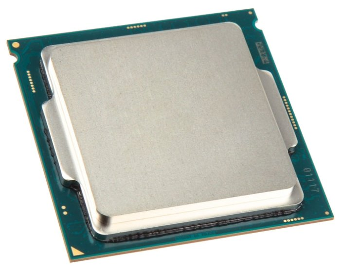
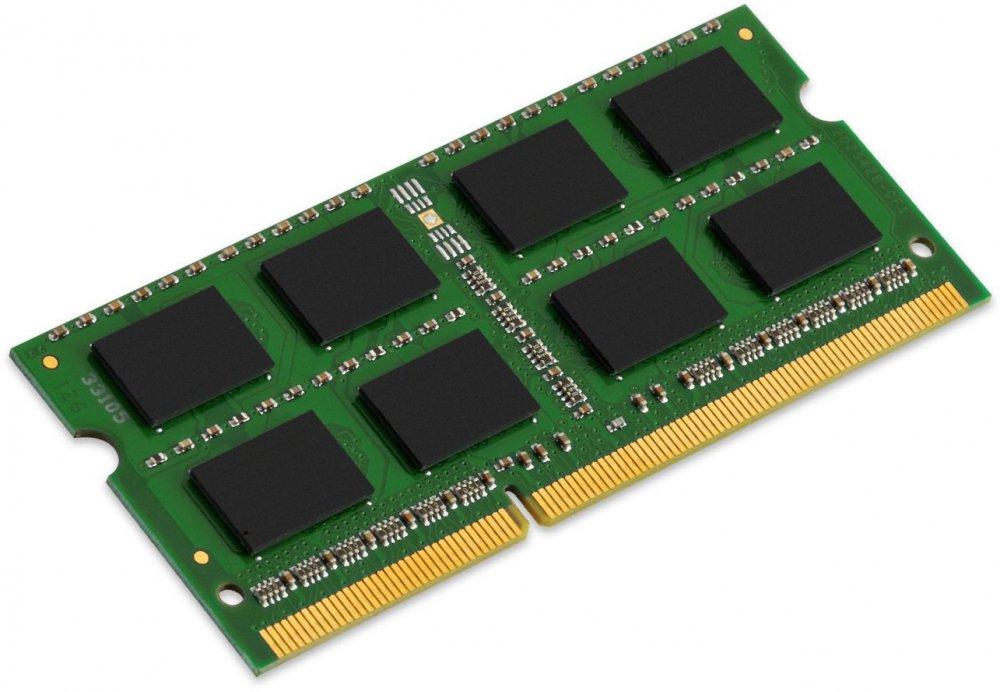
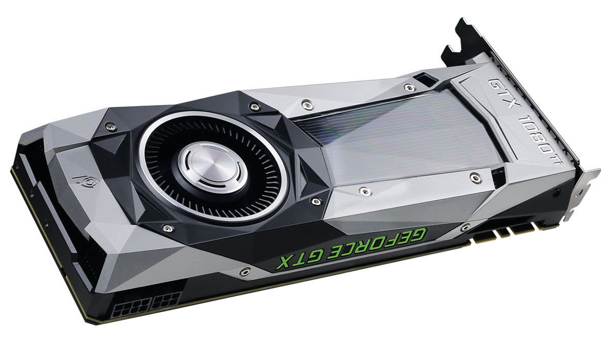
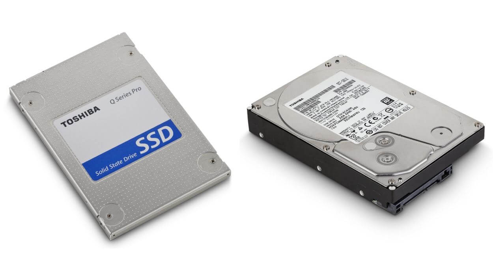
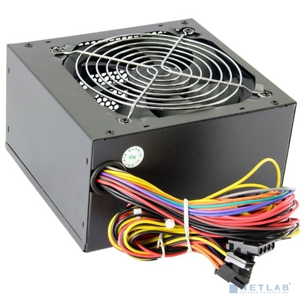
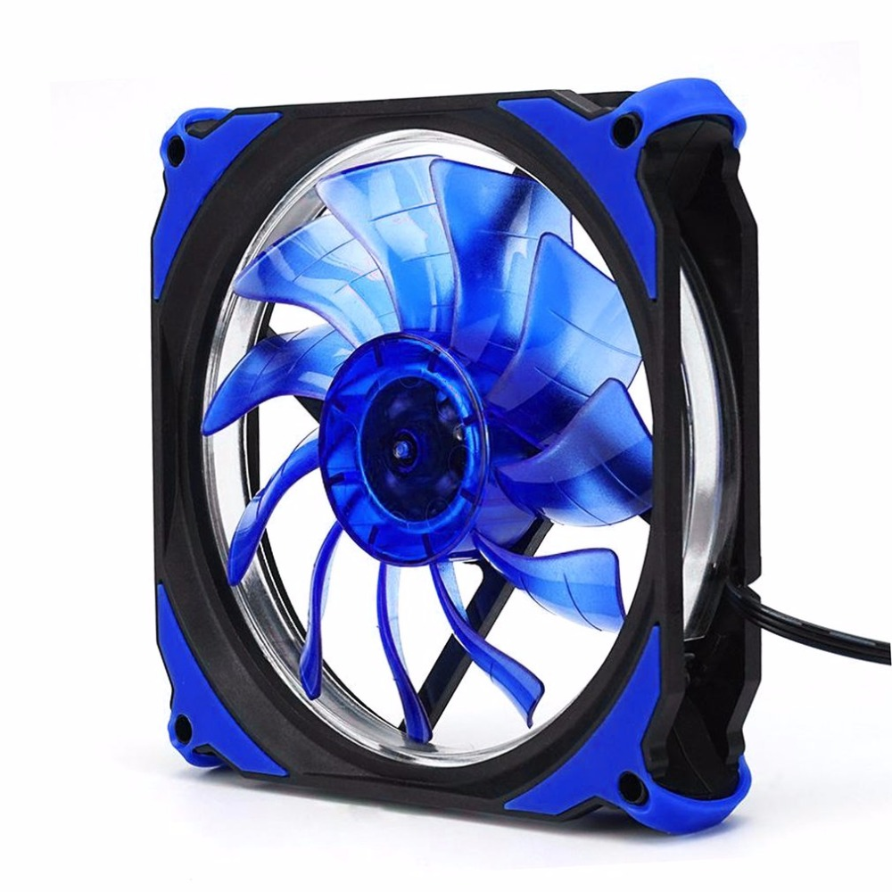
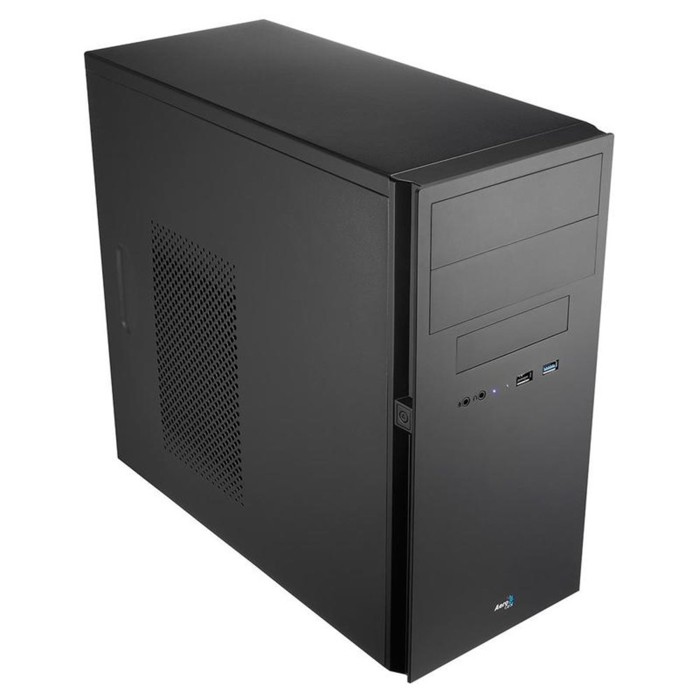

{% extends 'base.html' %}
{% block title %}
Комплектующие ПК
{% endblock %}
{% block content %}
Комплектующие компьютера
Центральный Процессор (CPU)

Центральный процессор – микросхема, которая осуществляет обработку информации, выполняет команды пользователя и руководит другими частями компьютера.
Изначально термин центральное процессорное устройство описывал отдельный класс логических машин, предназначенных для выполнения сложных компьютерных программ. Позже он естественным образом был перенесён на сами компьютеры.
Основные характеристики:
- Частота
- Количество ядер
- Количество потоков
Материнская плата
 Материнская плата - плата, являющаяся основной с связи компонентов компьютера. На ней располагаются:
Материнская плата - плата, являющаяся основной с связи компонентов компьютера. На ней располагаются:
- Сокет для процессора
- Разъемы под оперативную память
- Чипсет - набор микросхем для обеспечивания совместной работы комплектующих компьютера
- Контроллеры периферийных устройств
- Слоты расширения
Основные характеристики:
- Форм-фактор - стандарт, определяющий размер материнской платы
- Сокет - слот для процессора, определяющий количество контаков
- Количество слотов расширения и оперативной памяти
Оперативная память (RAM)

Оперативная память - вид компьютерной памяти, используемой компьютером для хранения данных, обрабатываемых процессором. Данный вид памяти является энергозависимым, поэтому при резком отключении от сети данные не сохраняются, что приводит к ошибкам в работе.
Основные характеристики:
- Объем
- Частота
- Тип памяти и форм-фактор
Видеокарта (GPU)

Видеокарта - устройство, отрисовывающее графические данные работы компьютера в вид, удобные для восприятия человеком на экран монитора, а также занимаются формированием самих графических данных, заменяя процессор для ускорения работы.
Основные характеристики:
- Мощность графического процессора
- Тип и объем видеопамяти
- Максимальное разрешение изображения на выходе
- Количество подключаемых мониторов
- Тип подключения
Накопители

Жесткий диск - записывающее устройство, которое используется для долговременного хранения данных, основанное на магнитных принципах записи.
SSD - альтернатива жесткому диску, основанная на более быстрой, но более дорогой системе записывания данных. Таким образом твердотельные накопители имеют большую скорость записи, значительно тише в объеме и меньшие в размерах, однако могут хранить меньшие объемы данных.
Основные характеристики:
- Объем накопителя
- Скорость записи
- Интерфейс подключения
- Уровень шума
- Тип памяти (Для SSD)
Блок питания

Блок питания - компонент, формирующий напряжения для питания других элементов компьютера, а также выполняет функцию стабилизации тока и защиты от помех в электрической сети.
Основные характеристики:
- Мощность
- КПД
- Форм-фактор
- Уровень шума
Охлаждение

Система охлаждения компьютера - набор средтсв для отвода тепла от комплектующих в ходе их работы.
Типы:
- Активная
- Пассивная
- Жидкостная
Основные характеристики:
- Количество развеиваемого тепла
- Тип
- Размеры установок
- Уровень шума
Корпус

Корпус - внешняя физическая оболочка компьютера, являющаяся основой для размещения комплектующих.
> Основные характеристики:
- Размер и форм-фактор
- Охлаждение и продуваемость
- Материал корпуса
{% endblock %}